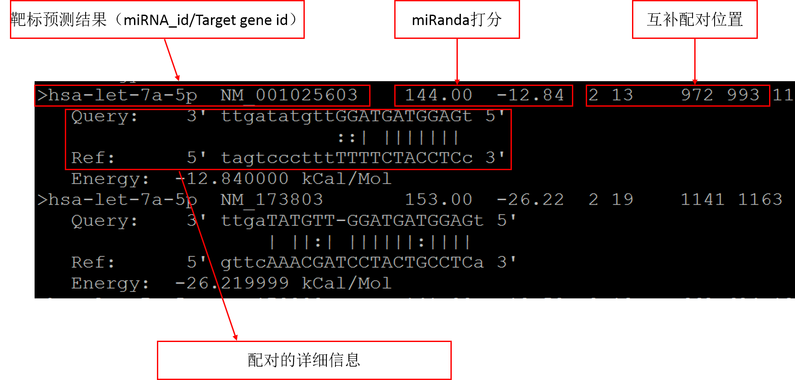

miRNA-mRNA靶标预测
根据差异蛋白编码基因列表，从RefSeq数据库(https://www.ncbi.nlm.nih.gov/refseq/)中提取3'UTR序列。由于芯片数据的基因id更新较慢，此步骤会根据最新的RefSeq信息，去除已经过时的基因，并提取相应的3'UTR序列。
miRNA成熟体序列，我们从miRbase数据库(http://www.mirbase.org/)上下载miRNA数据，并根据差异表达miRNA id提取成熟体序列。
根据已经发表的研究成果，miRNA对蛋白编码基因（PCG）的作用主要是通过结合到PCG的3'UTR序列，从而对靶基因产生作用。此分析通过用miRanda扫描差异表达基因的差异的3'UTR区域是否存在miRNA的靶标位置。miRNA-mRNA互作应当满足以下条件：
- miRNA and PCG是差异表达基因；
- 因为miRNA靶定在mRNA上，起到对mRNA的抑制作用，所以miRNA and PCG的基因表达的变化，必须其中一个上升，另外一个下降。
靶标预测结果，如下：
下调miRNA调控上调mRNA：down.mirna.vs.up.mrna.xlsx
上调miRNA调控下调mRNA：up.mirna.vs.down.mrna.xlsx
miRNA靶标的位置信息，如下：
下调miRNA调控上调mRNA：down.mirna.vs.up.mrna.bindingSite.txt
上调miRNA调控下调mRNA：up.mirna.vs.down.mrna.bindingSite.txt
文件格式，如下：

选取top5 miRNA，展示miRNA-mRNA相互作用网络（橙色节点表示miRNA, 绿色节点表示gene/mRNA），如下：
下调miRNA调控上调mRNA：

上调miRNA调控下调mRNA：